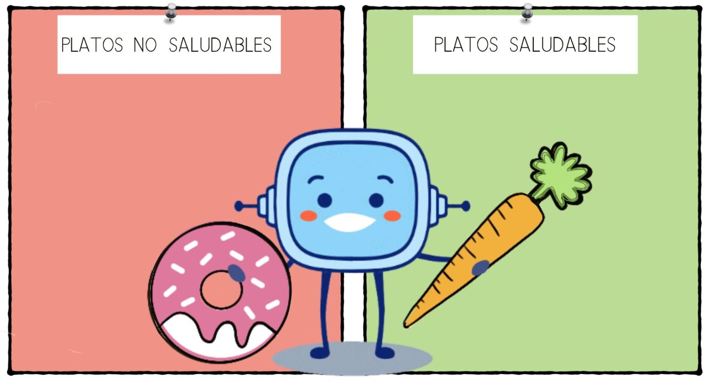

Explica al resto de la clase qué ingredientes lleva, cuándo lo comes, con quién sueles tomarlo, quién lo prepara, ¿crees que es saludable? ¿Por qué?
Después de explicar todos vuestros platos favoritos, ha llegado el momento de clasificarlos en “saludables” y “no saludables”.
Pega tu plantilla en un mural grande dividido en dos partes: saludables o no saludables, según creas, y da tus explicaciones sobre por qué crees que va en esa parte del mural donde la has pegado.

Definición:
Sustancia que forma parte de una mezcla.
Ejemplo:
Compra los ingredientes para cocinar.
Definición:
Seguir los pasos necesarios para hacer algo.
Ejemplo:
Mi padre preparó todos los ingredientes para hacer la tarta.
Definición:
Ordenar o dividir un conjunto de elementos en clases a partir de un criterio determinado.
Ejemplo:
Vamos a clasificar estos huevos por su tamaño.
Definición:
Cartel o letrero que se coloca o se hace sobre la superficie de un muro o pared.
Ejemplo:
El mural de la clase de ciencias es muy interesante.
Lectura facilitada
Dibuja tu plato favorito en una plantilla como esta.
Después clasifica estos platos en “saludable” y “no saludable”.
Sigue estos pasos:
Pega tu plantilla en el mural grande dividido en dos partes: saludable o no saludable.
Explica por qué crees que va en esa parte del mural.
Definición:
Sustancia que forma parte de una mezcla.
Ejemplo:
Compra los ingredientes para cocinar.
Definición:
Seguir los pasos necesarios para hacer algo.
Ejemplo:
Mi padre preparó todos los ingredientes para hacer la tarta.
Definición:
Ordenar en clases a partir de un criterio.
Ejemplo:
Vamos a clasificar estos huevos por su tamaño.
Audio
Motus dice ¿Cómo te has sentido?
¿Te has emocionado con esta actividad?
Una actividad de clase puede hacerte sentir alegría, tristeza, enfado, sorpresa…
La forma en la que respondes ante una actividad puede decirte muchas cosas sobre ti.
Si te sientes inseguro o insegura es porque es una actividad nueva que no sabes muy bien cómo resolver. Si te sientes alegre, seguramente es porque sabes que serás capaz de hacerla muy bien.
Conocer las emociones que sientes cuando vas a hacer una actividad te ayudará a:
Pedir ayuda.
Relajarte para contestarla.
Pensar en cómo podrás contestarla.
¡Haz caso a tus emociones!
Pregunta Verdadero-Falso
Responde a las siguientes preguntas después de realizar la actividad anterior:
Retroalimentación
Falso
Retroalimentación
Verdadero
Retroalimentación
Falso
Retroalimentación
Verdadero
Lista desordenada
Ordena las siguientes palabras para formar una oración sobre alimentación saludable
Cada
comida
es una
oportunidad
para
cuidar de
ti mismo.
Comprobar
¡Correcto!
2025214195013-60
Actividad no completada#Actividad superada. Puntuación: %s#Actividad no superada. Puntuación: %s#Lista desordenada
No es correcto... Respuesta correcta:
2. Ahora ponlo en práctica
Vamos a trabajar de forma individual para practicar con los alimentos.
2.1: ¡Te lo recomiendo!
Recomienda tu plato favorito en un anuncio publicitario.
No olvides poner un dibujo, su nombre y por qué lo recomiendas. Utiliza letras bonitas y llamativas.
2.2: Inventando platos
Elige los ingredientes que más te gusten de los que aparecen en la imagen. Después invéntate un plato. Si quieres puedes añadir ingredientes que no aparezcan en la imagen. ¡No olvides darle nombre a tu creación!

.png "Clasificar")